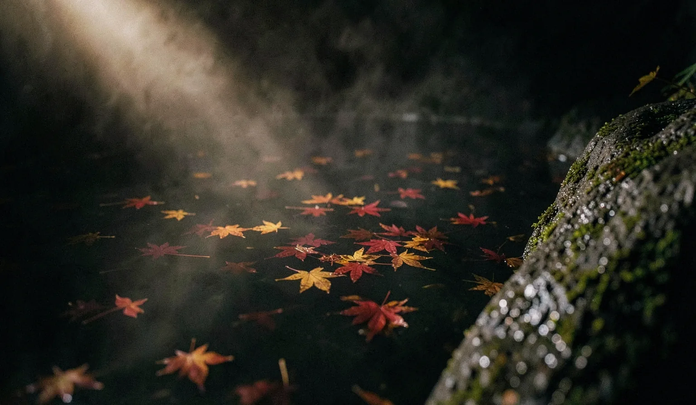
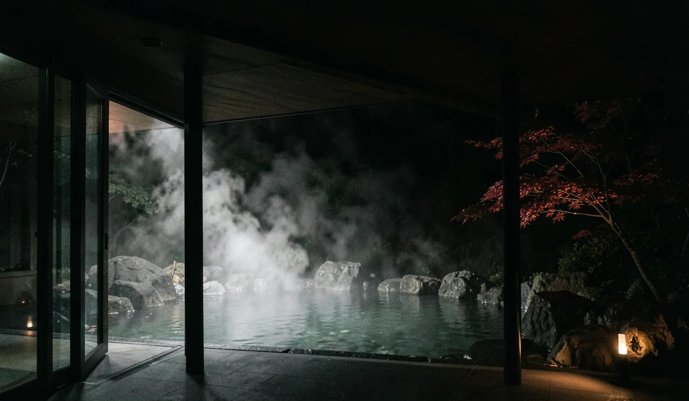
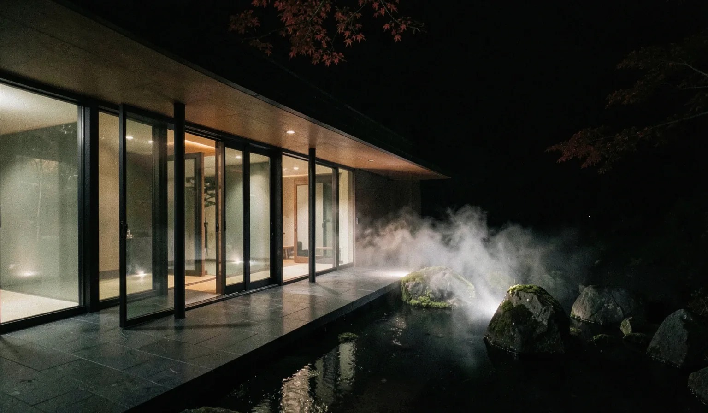
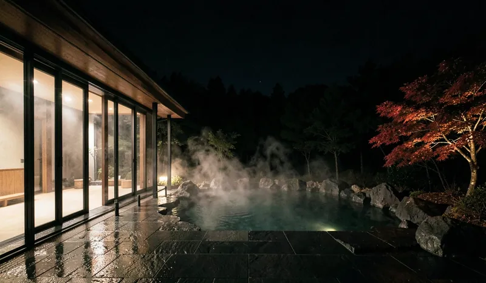

OPEN-AIR BATH
森の露天風呂
岩を組んだ湯船を、杉の森のなかに。夜は足もとの灯りだけを残し、湯船の上には明かりを置きません。見上げれば、森の影と星。秋は、湯の上に紅葉が落ちてきます。


ONSEN
霧音の湯は、敷地のいちばん奥、杉の根元から湧く源泉です。湯温は48.2℃。水を足さず、温めもせず、木樋で冷ましながら湯船へ流しています。肌あたりのやわらかい、無色透明の湯です。
OPEN-AIR BATH
岩を組んだ湯船を、杉の森のなかに。夜は足もとの灯りだけを残し、湯船の上には明かりを置きません。見上げれば、森の影と星。秋は、湯の上に紅葉が落ちてきます。

PRIVATE BATH
苔庭の離れと本館にお泊まりの方は、ガラス張りの湯屋の貸切露天風呂を、空いていればいつでもお使いいただけます。札を返して、鍵をかけるだけ。予約はいりません。


湯温が高めのため、長湯はお控えください。湯の様子により、閉める時間が前後することがあります。